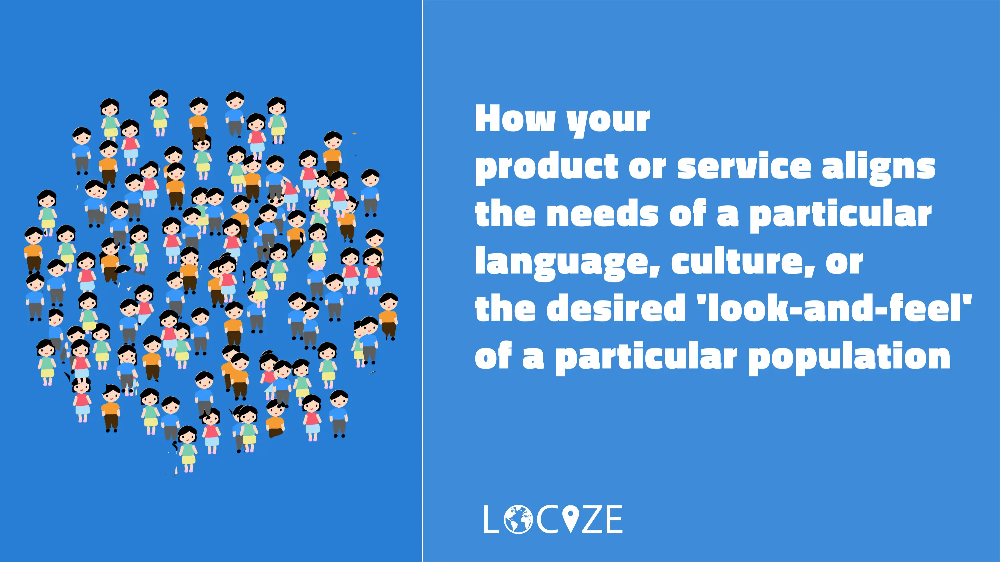

Wenn Sie sich fragen, Was ist Lokalisierung, dann ist dieser Blogartikel für Sie da. Wir werfen einen genaueren Blick darauf, was das bedeutet und wie es Ihnen helfen kann.
Was ist Lokalisierung?
Bei der Lokalisierung wird ein Produkt oder eine Dienstleistung an die Sprache, die Kultur oder die Vorlieben einer bestimmten Zielgruppe angepasst. Das Ergebnis einer erfolgreichen Lokalisierung ist ein Produkt oder eine Dienstleistung, das bzw. die sich nahtlos in die lokale Kultur einfügt und den Eindruck vermittelt, dass es bzw. sie ursprünglich für diesen speziellen Markt entwickelt wurde.
Für internationale Marken und Organisationen ist es unerlässlich, ihren Kunden das bestmögliche Erlebnis zu bieten. Ein effektiver Lokalisierungs-Prozess kann ein Unternehmen transformieren und dabei helfen, die Reichweite zu erhöhen und das Engagement zu maximieren, aber was genau ist das genau?
Lasst uns anfangen.
Inhaltsverzeichnis
- Was ist das Konzept der Lokalisierung
- Beispiele aus dem wirklichen Leben für erfolgreiche Lokalisierungsprojekte
- Informationen zu Lokalisierungsstrategien
- Was sind die Ziele der Lokalisierung
- Ressourcen zur Bedeutung der Lokalisierung auf internationalen Märkten
- Leitfäden für die Umsetzung der Lokalisierung
- Abschliessende Gedanken
What does localization mean
Während also die Sprachübersetzung der Prozess ist, schriftliche Inhalte von einer Sprache in eine andere umzuwandeln, geht die Lokalisierung darüber hinaus. Da geht es um Dinge wie:
Sprache
Übersetzen von Texten und Sicherstellen, dass sie kulturell angemessen sind, unter Berücksichtigung von idiomatischen Ausdrücken, Slang und zielsprachenspezifischer Terminologie.
Anpassung der Inhalte
Anpassung von Inhalten an die kulturellen Normen, Überzeugungen und Werte der Zielgruppe. Dazu gehören Bilder, Symbole, Farben und Verweise, die in einer bestimmten Kultur empfindlich oder beleidigend sein könnten.
Regionale Präferenzen
Anpassung des Produkts oder des Inhalts an regionale Präferenzen, wie Datumsformate, Währungen, Masseinheiten und andere regionale Unterschiede.
Benutzeroberfläche (UI)
Anpassung der Benutzeroberfläche, des Layouts und des Designs an verschiedene Sprachen und Leserichtungen (z. B. rechts-nach-links für Arabisch oder Hebräisch).
Einhaltung rechtlicher und behördlicher Vorschriften
Sicherstellen, dass das Produkt oder der Inhalt mit den lokalen Gesetzen, Vorschriften und Industriestandards übereinstimmt.
Funktionalität
Änderung von Merkmalen oder Funktionen, die für den Zielmarkt nicht relevant oder praktisch sind, oder Hinzufügen von Funktionen, die für diesen Markt spezifisch sind.
Testen
Rigoroses Testen des lokalisierten Produkts oder Inhalts, um Probleme im Zusammenhang mit sprachlichen, kulturellen oder technischen Aspekten zu erkennen und zu beheben.
Die Lokalisierung ist eine wichtige Strategie für Unternehmen jeder Grösse, denn sie macht ihre Inhalte für die Zielgruppe, die sie erreichen wollen, noch attraktiver. Der Prozess, ein Produkt zunächst zu lokalisieren und dann für verschiedene nationale Zielgruppen zu lokalisieren, wird manchmal als Globalisierung bezeichnet.
Laut diesem Artikel gaben 40% der Verbraucher an, dass sie niemals von einer Website kaufen würden, die nicht in ihrer Muttersprache verfasst ist. Und 75% gaben an, dass sie eher wieder bei einem Unternehmen kaufen würden, wenn der Kundendienst in ihrer Muttersprache wäre.
Mit Hilfe dieses Artikels können Sie lernen, wie Sie Ihre Dienstleistung oder Ihr Produkt an eine bestimmte Sprache, Kultur oder einen bestimmten Zielmarkt anpassen können, unabhängig davon, in welcher Branche Sie tätig sind.
Ausserdem erklären wir Ihnen, wie Sie Inhalte oder Produkte für verschiedene Märkte und geografische Gebiete anpassen können.
Doch zunächst wollen wir uns einige erfolgreiche Beispiele ansehen, die von bekannten Marken genutzt werden.

Beispiele aus der Praxis für erfolgreiche Lokalisierungsbemühungen
Geschäftliches Beispiel
Die Internationalisierung nimmt immer mehr zu, und die Unternehmen interagieren nun mit Kunden und Auftraggebern aus der ganzen Welt. Die Lokalisierung sollte nun ein wesentlicher Bestandteil ihrer Wachstumsstrategie sein und alles abdecken, von Unternehmenswebsites und Marketingmaterialien bis hin zu rechtlichen Dokumenten und Produkthandbüchern.
Ein grossartiges Beispiel hierfür ist Airbnb, das sein Geschäft erfolgreich in über 220 Länder ausweiten konnte, wobei jedes einzelne Land dem Verbraucher eine persönliche und lokalisierte Note bietet.
Quelle: airbnbSoftware Beispiel
Lokalisierung ist auch in der Welt der Softwareentwicklung eine wichtige Strategie. Alles, von der Benutzererfahrung bis zum allgemeinen Design, muss berücksichtigt werden, um sicherzustellen, dass die Kunden die beste Erfahrung machen.
>Ein gutes Beispiel für die Software-Lokalisierung ist Netflix. Der globale Streaming-Riese ist zum Synonym für Bemühungen sowohl auf der Übersetzungs- als auch auf der Entwicklerseite geworden. Die Technologie und die Prozesse, die Netflix einsetzt, werden in jeder Region übersetzt und lokalisiert, was bedeutet, dass sich die Benutzeroberfläche und die Apps ebenso ändern wie die Untertitel und die Synchronisation der Inhalte. Sogar die Filme und Fernsehsendungen, die sie entwickeln, werden für bestimmte Länder lokalisiert.
Quelle: netflixWeitere Beispiele aus der Praxis finden Sie auf dieser Seite.
Was sind die Ziele der Lokalisierung
Das ultimative Ziel ist es, eine klare Benutzererfahrung zu entwickeln, die Ihr Marketing vorantreibt und Sie beim Erreichen Ihrer Ziele unterstützt. Es gibt jedoch viele Vorteile, die sich aus der Implementierung ergeben können, darunter:
Betreten Sie neue Märkte
Eines der Hauptziele einer Lokalisierungsstrategie ist es, Marken zu helfen, neue Märkte zu erschliessen. Es wird helfen, alle logistischen oder rechtlichen Hürden zu überwinden und eine reibungslose Kommunikation zwischen allen Partnern sicherzustellen.
Sichern Sie sich einen Wettbewerbsvorteil
Die Implementierung der Lokalisierung kann Unternehmen auch dabei helfen, einen Wettbewerbsvorteil zu erlangen. Auf einem lokalen Markt gegen Wettbewerber anzutreten, kann unglaublich herausfordernd sein, da sie oft das Vertrauen des lokalen Publikums geniessen. Es wird Ihnen helfen, dieses Vertrauen aufzubauen und Ihnen einen Vorteil zu verschaffen.
Verbessern Sie die Kundenzufriedenheit
Ein weiteres wichtiges Ziel ist, dass es hilft, die Kundenzufriedenheit zu verbessern. Wenn sie Inhalte in ihrer eigenen Sprache und in einem Stil sehen, mit dem sie sich wohler fühlen; Es ist wahrscheinlicher, dass sie Ihre Produkte und Dienstleistungen kaufen oder nutzen.
Erhöhen Sie die Markentreue
Wenn Sie in der Lage sind, die Kundenzufriedenheit zu verbessern, erhöhen Sie auch die Markentreue. Die Kommunikation mit Kunden in ihrer eigenen Sprache und ihrem eigenen Stil wird Ihnen helfen, ihr Vertrauen zu gewinnen und die Wahrscheinlichkeit einer Rückkehr zu erhöhen.
Maximieren Sie Ihren Gewinn
Vor allem aber ist das Hauptziel einer Strategie, Unternehmen dabei zu helfen, ihren Gewinn zu maximieren. Wenn Sie ein viel grösseres und wirklich globales Publikum erreichen, müssen Sie auf persönliche Weise mit ihnen in Kontakt treten, um die Anzahl der Kunden und am Ende auch den Umsatz zu maximieren.
Ressourcen zur Bedeutung der Lokalisierung auf internationalen Märkten
Sprachliche Lokalisierung
Sprachlokalisierung ist der Prozess der Anpassung von Inhalten, Software oder Produkten an eine bestimmte Sprache oder Sprachregion.
Lokalisierungs-Strategie
Eine Lokalisierungsstrategie ist ein umfassender Plan, der beschreibt, wie ein Unternehmen seine Produkte, Dienstleistungen oder Inhalte für bestimmte Märkte und Kulturen anpasst.
Software Lokalisierung
Es ist der Prozess der Anpassung von Softwareanwendungen und deren UI/UX-Design, um nahtlos in verschiedenen Sprachen und Regionen zu funktionieren.
Javascript Lokalisierung
Unter JavaScript-Lokalisierung versteht man die Anpassung von JavaScript-Code und Webanwendungen, damit sie in mehreren Sprachen und Regionen effektiv funktionieren.
Leitfäden für die Umsetzung der Lokalisierung
-
1. Feststellen, was lokalisiert werden muss
Zunächst müssen Sie feststellen, ob der Inhalt, den Sie anpassen müssen,
-
2. die Bedeutung einer umfassenden Recherche
Um diese Veränderungen zu erkennen, ist oft eine umfassende Untersuchung der Kultur und der Verhaltensweisen der neuen Zielgruppe erforderlich.
-
3. professionelle Unterstützung bei der Durchführung von Änderungen
Wenn Sie festgestellt haben, welche Änderungen erforderlich sind, ist es an der Zeit, diese Änderungen vorzunehmen.
-
4. Qualitätssicherung für ein nahtloses Endprodukt
Wenn alle diese Änderungen vorgenommen wurden, müssen sie anschliessend einen umfangreichen Qualitätssicherungsprozess durchlaufen.
-
5. Lokalisierung für verschiedene Inhaltstypen
Ganz gleich, ob Sie Ihre Website, Ihr Marketingmaterial, Ihre juristischen Dokumente oder Ihr Computerspiel lokalisieren möchten.
Schauen Sie sich dieses Video an, um zu erfahren, wie unsere Software Ihnen helfen kann, Ihren Prozess im Hinblick auf die Verwaltung von Übersetzungen zu verbessern:
Abschliessende Gedanken
Hoffentlich hat dieser Blogbeitrag dazu beigetragen, die anfängliche Frage zu beantworten und Ihnen eine bessere Vorstellung davon zu geben, wie Ihr Unternehmen davon profitieren kann. Die Implementierung der Lokalisierung kann auf jeden Aspekt Ihres Unternehmens angewendet werden, und unser äusserst erfahrenes Team verfügt über jahrelange Erfahrung in der Unterstützung von Kunden. Dies sind Unternehmen, Softwareentwickler und Projektmanager mit all ihren Anforderungen an das Übersetzungs- und Lokalisierungsmanagement.
Wir haben im Laufe der Jahre mit Tausenden von Kunden zusammengearbeitet und ihnen die Fähigkeiten und das Wissen vermittelt, um ihre Abläufe zu transformieren. Haben Sie eine Frage zur Lokalisierung? Hinterlassen Sie uns jetzt eine Nachricht an support@locize.com.
➡️ Erfahren Sie mehr über unseren Website-localization-service
➡️ Erstellen Sie kostenlos ein neues Benutzerkonto, um unsere Software kostenlos zu testen
➡️ Sie möchten mehr zum Thema lesen? Dann ist dieser Artikel über Softwarelokalisierung genau das Richtige für Sie